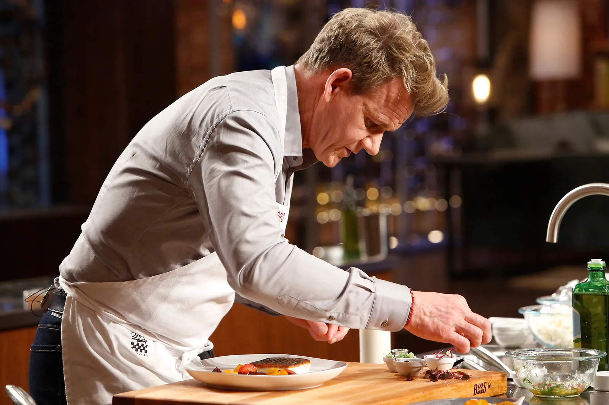

Calidad
Elegimos cuidadosamente los ingredientes para mantener altos estándares en cada preparación.
Una trayectoria construida sobre disciplina, excelencia y pasión por la gastronomía.
Conocer su historia
Gordon Ramsay es uno de los chefs más reconocidos internacionalmente y una figura destacada de la gastronomía contemporánea.
Su carrera se caracteriza por la exigencia, la disciplina y una búsqueda constante de la excelencia culinaria. A lo largo de su trayectoria ha trabajado en algunos de los restaurantes más prestigiosos del mundo y ha desarrollado una propuesta gastronómica reconocida por su técnica y precisión.
En Le Château Gourmet buscamos transmitir ese mismo espíritu: convertir cada plato en una experiencia, cuidar cada detalle y entender la cocina como una combinación entre técnica, creatividad y pasión.
El recorrido de un chef marcado por la dedicación y la búsqueda permanente de la excelencia.
Ramsay comenzó su formación profesional en el mundo de la cocina y posteriormente amplió sus conocimientos trabajando con importantes figuras de la gastronomía.
Su carrera continuó en reconocidas cocinas europeas, donde perfeccionó sus técnicas y desarrolló una visión propia de la gastronomía.
Con el paso de los años creó y dirigió restaurantes reconocidos por su nivel gastronómico y por los estándares de calidad de su cocina.
Su trabajo en la gastronomía y su presencia en televisión han convertido su nombre en una referencia conocida por millones de personas alrededor del mundo.
Para nosotros, la gastronomía no consiste solamente en preparar alimentos. Se trata de seleccionar los mejores ingredientes, dominar las técnicas y cuidar la presentación para crear una experiencia completa.
La filosofía de nuestra cocina busca combinar tradición y creatividad, respetando el producto y permitiendo que cada ingrediente tenga su propio protagonismo.
Elegimos cuidadosamente los ingredientes para mantener altos estándares en cada preparación.
Cada técnica, tiempo de cocción y presentación es trabajado con atención al detalle.
La innovación nos permite transformar ingredientes tradicionales en experiencias diferentes.
Cada plato representa el compromiso de nuestro equipo con la gastronomía.
“La cocina es una forma de expresión, una combinación de técnica, pasión y creatividad.”
Gordon Ramsay
Descubre nuestra propuesta gastronómica y disfruta de una experiencia creada para los amantes de la alta cocina.